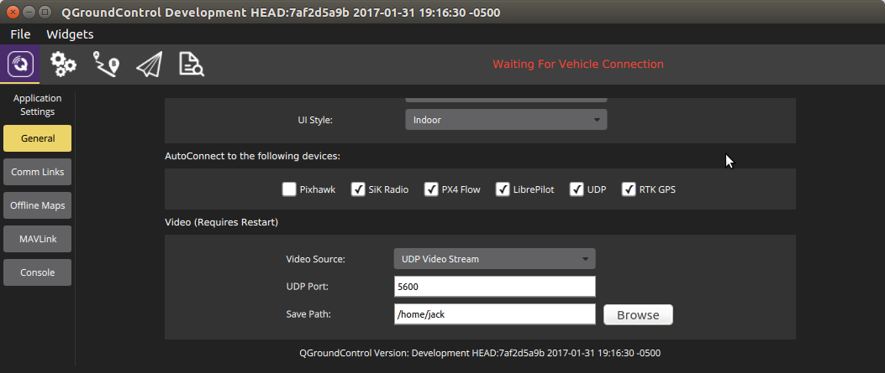
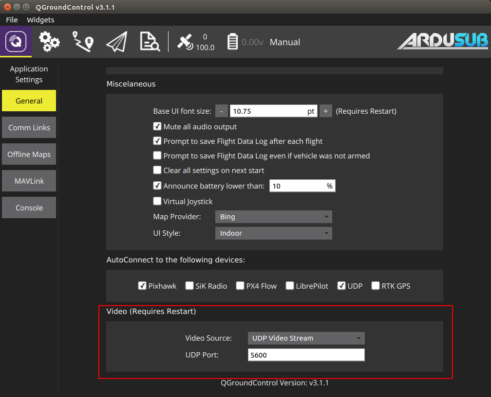

Troubleshooting
This page shares issues that users have run into and how they were resolved. Hopefully this will help to solves issues for others.
Vehicle Control
Vehicle has telemetry but does not respond to joystick
Make sure you followed the instructions in Joystick/Gamepad Calibration and that the "Enable joystick input" checkbox is checked.
Vehicle flips itself over
Check that the motor directions are configured correctly. Also check that the motors are connected to the correct motor outputs on the flight controller, according to the supported frame diagrams.
Vehicle turns or moves even when not controlled to do so.
Please check RCx_TRIM parameters to make sure that all trims are set to 1500, with the exception of RC3_TRIM, which should be set to 1100.
Motors spin as soon as the vehicle is armed.
Make sure that the vehicle is in Manual mode.
The flight controller attempts to stabilize the vehicle's attitude so that it is perfectly level. If the vehicle's attitude is off from level, even a fraction of a degree, the flight controller will spin the motors in an attempt to correct the error. If the vehicle is sitting on land, the error will not change, and the flight controller will spin the motors faster and faster as it tries harder and harder to correct the error. Testing the vehicle on land should be done in MANUAL mode, which just passes pilot inputs to the motors with no stabilization.
No Telemetry / "Waiting for Vehicle Connection" (No Autopilot Connection)
Verify Network Configuration
Verify that your network settings are correct. Verify your network configuration by entering the command ipconfig (Windows) or ifconfig (Mac/Linux) on the surface computer command line. The output should show that your Ethernet IP address is 192.168.2.1 and the subnet mask is 255.255.255.0.
Carefully double check that you have entered these numbers correctly. The Ethernet IP address should be exactly 192.168.2.1 and the subnet mask should be exactly 255.255.255.0.
You should be able to ping the companion computer from the surface computer. On the surface computer's command line enter:
ping 192.168.2.2
If you do not get a ping response, then something is wrong with the network communication between the surface computer and the companion computer. You may have to adjust your firewall and/or antivirus settings to allow QGrouncControl access to the network.
Firewall and Antivirus
Antivirus and firewall software can block the incomming connection from the ROV. Make an exception/rule to allow inbound and outbound traffic on UDP ports 5600 and 14550, or turn off your antivirus and firewall software.
Cabling
Try replacing your Ethernet cable. Sometimes the wires inside a cable break, and the cable stops working.
Reboot Computer
If you are using Windows, sometimes the computer needs to be rebooted for network settings to take affect.
Verify QGC Autoconnect settings
Make sure that the QGroundControl is configured to automatically connect to UDP and USB links. Click on the 'Q' icon in the upper left to view the Application Settings. Click on the 'General Settings' tab. In the options for 'Autoconnect to:', make sure the UDP option is checked.

Verify Autopilot USB Connection
Check if the Autopilot is connected with following steps:
- Navigate to the system page in the Companion web interface
- Check the list of detected serial devices for an entry that says
Pixhawk Autopilot If you do not see an entry that says
Pixhawk Autopilot, check the autopilot connection with the Companion computer.- You can test the autopilot and the usb cable by connecting the autopilot directly to your surface computer and checking the connection with QGroundControl.
- If you cannot connect to the autopilot:
- Try using a different usb cable. Make sure that the USB cable has data lines, some USB cables only provide power and will not allow communication. You can connect the Pixhawk to the surface computer directly with the USB cable to verify that the USB cable works.
- Try connecting the autopilot to a different usb port
- Try replacing the autopilot
If you see an entry in the detected serial devices list that says
Pixhawk Autopilot (bootloader), you must flash the autopilot with ArduSub firmware. Click the 'Restore Default Firmware' button on the system page, and wait for the text on the bottom of the page to indicate that the process is complete.
If you do not see the system web page, make sure the companion computer is powered on with a supply that is capable of delivering at least 2A. Check the activity lights on the Raspberry Pi Ethernet Jack. The lights should be on or blinking. If the lights are not on, make sure that you are using a network patch cable, not a crossover cable. Look closely at the color of the wires inside connectors on either end of the network cable, the order of the wires should be the same on both ends of the cable. If everything appears ok with the companion computer and the physical network connection, check your network settings (below).
Check MAVProxy
If your network is configured correctly, but you still have no telemetry, we need to make sure that MAVProxy is running on the companion computer and that the autopilot and MAVProxy are communicating.
To verify that MAVProxy is running, visit the system page in the companion web interface, and look for the mavproxy entry under the list of active services.
To verify that MAVProxy and the autopilot are communicating, log into the Companion computer via the web terminal, ssh, or PuTTY (user: pi, password: companion), and enter the command:
screen -r mavproxy
If Mavproxy and the autopilot are working correctly, the output should contain something like this:
APM: ArduSub V3.4 (422c10cf)
APM: PX4: 96a4c296 NuttX: 580f5354
APM: Frame: ROV_VECTORED_FRAME
APM: PX4v2 0048003B 3135510C 35333436
Received 608 parameters
Saved 608 parameters to mav.parm
To return to the command line and keep the mavproxy process running, hit control+a then type 'd' (to detach).
If you still do not have telemetry after all of these steps, please reboot the surface computer and the companion computer, and try again. If it is still not working after rebooting, please leave a comment on discuss.bluerobotics.com with notes on your results of all of the above troubleshooting steps.
Reset MavProxy Options
Some updates require changes to the MavProxy options. To avoid overwriting user changes, those do not apply until you Restore Default Options. Navigate to MavProxy page and click Restore Default Options. This will erase the current options, revert to the default for the current companion version, and reset the MavProxy service.
No Video
If you do not have telemetry, please troubleshoot that first according to the above instructions.
Begin by verifying that your network settings are correct, your Ethernet IP address should be 192.168.2.1 and the subnet mask should be 255.255.255.0.
If you have telemetry, but no video, make sure the video settings are correct in QGroundControl. The video settings are found in the General tab of the Application Settings (Q icon) view. The video source should be set to UDP video, and the port should be 5600. These are the default settings. If you change these settings, you will need to close and re-launch QGroundControl.

If you are using Linux, you must install a few dependencies for the video to work:
apt install gstreamer1.0-x gstreamer1.0-libav gstreamer1.0-plugins-base gstreamer1.0-plugins-good gstreamer1.0-plugins-bad gstreamer1.0-plugins-ugly
Verify that your camera is detected by seeing it listed under the detected video devices section on the Companion system webpage. If your camera is not detected, make sure that the camera supports H.264 video output, and make sure the cable is well-seated, or try another camera cable.
Verify that the video streaming service is active; it should be listed under the active services on the Companion system webpage.
If you are using a Windows computer:
- Disable/re-enable the network interface
- Reboot
- QGC installs three shortcuts: QGC, QGC (GPU Safe Mode), and QGC (GPU Compatibility Mode). Try launching QGC with each of these shortcuts
Poor video streaming performance
The video stream should have about 200ms delay, just barely noticeable. There are many factors that could cause lag, low framerate, and pixelation/tearing in the video.
Here are some tips for troubleshooting poor video performance:
In general:
- Bandwidth - Test the bandwidth at 192.168.2.2:2770/network. The maximum theoretical bandwidth on a Raspberry Pi 3 is 100Mbps, if the bandwidth tests achieve greater than 70Mbps, it is a very good connection. Systems with bandwidths below 15Mbps should be diagnosed for issues.
- Try another cable - Not all cables are created equal; some are really junk.
- Update Software - Use the latest software to make sure you are getting the best performance.
- Companion computer power supply - Most companion computers require a power supply capable of providing 5V at 2A. Smaller/weaker power supplies can severely affect performance of the companion computer.
- Tether interface power supply - If you are using a tether interface board, make sure it has a solid power supply. Some laptop USB ports cannot provide enough power for the tether interface board to perform optimally. Try using a portable USB battery charger.
- Tether interface connections - Make sure that all connections are well-seated and tight.
- System resources - Open the system resource monitor and look at how much CPU and RAM your computer is using. Try closing other programs like anti-virus and screen recorders to make more system resources available to programs used to operate the vehicle.
- Resolution - Modify the video stream Frame Size at 192.168.2.2:2770/camera. Change it to a value equal to or less than the resolution of your display.
If you are using a Raspberry Pi camera:
- Delete the '--intra 1' setting at 192.168.2.2:2770/camera and restart the camera.
- Update the companion computer software at 192.168.2.2:2770/system.
If you are using a Windows computer:
- Upgrade to Windows 10!
Try these three suggestions by Bo Koppel:
When using original power supply that supply laptop (but not charge at the same time) there is something probably in BIOS that slow down graphic card to save energy. That makes processor do some of the graphics calculations. (And actually consume even more energy!) Solution: Go on battery or use a large powersupply (in our case 120W) How to quick check if this is the problem: pull out powersupply, if this is the case, latency disappear in two seconds.
Nvidia powerful graphic cards use an engine called PhysX for games etc. It seams QGC does not use that. Also QGC works default on motherboard graphic card, not on the more powerful Nvidia extension card. Solution: In Nvidias “control panel” select under “Programs” QGC so Nvidia forces QGC to use Nvidia card. Some graphic cards also needs tweeking in Nvidia 3D setup (same place as above line)
Real crazy in a few computers: Switch system fonts from 125% size to 100% (Right click desktop, “adjust screen” then “monitor” translated from Swedish OS) Check the 100% tickbox instead of 125% Log out and log in again, fixed….
Miscellaneous
Camera does not tilt
The output servo rail on the Pixhawk requires a separate 5V power supply. The power module and USB power inputs on the Pixhawk will not power the servo rail. Make sure you have a 5V input on the servo rail via an ESC BEC or standalone BEC.
Check that input/output channels are configured for camera tilt.
Check that joystick buttons have been assigned to camera tilt functions.
"No io thread heartbeat" message constantly appears.
This message indicates that the APM io thread has stopped running. The most likely cause is a corrupted filesystem on the micro SD card. Remove the card from the pixhawk, and format it as FAT32. If the error persists, you will need to replace the SD card, or disable dataflash log files by setting the LOG_BACKEND_TYPE parameter to None (0).
Compass heading drifts while the vehicle is stationary
The compass inside of the ROV is very sensitive and will be affected by large iron/steel structures, including rebar in concrete. You will get the best compass calibration outside, away from large structures and concrete. It is possible to calibrate inside, you may need to increase the value of the COMPASS_OFS_MAX parameter before you get a passing calibration. Note that the compass will always be affected by ferrous structures because they distort Earth's magnetic field, however the heading should remain stationary (maybe incorrect) while the vehicle is stationary in any case.
Perform these steps to recalibrate the compass:
- Power on the vehicle and wait 10 minutes to ensure the sensors are warmed up.
- Make sure that the INS_GYR_CAL parameter value is set to 'Never'.
- Perform an accelerometer calibration.
- Perform a compass calibration.
- Reboot the vehicle. The compass should be still.
Issue Reporting
We're always trying to make our documentation, instructions, software, and user experience better. If you're having an issue with anything, please report it so that we can address it as soon as possible! Here's where to do that depending on what's wrong:
- ArduSub Issues: For anything related to the ArduSub software that runs on the Pixhawk and controls the ROV, reports issues on the ArduSub Github Issues Page. If you're unsure where your issue should be posted, you can report it here.
- QGroundControl Issues: For anything related to the QGroundControl software, joystick setup, video streaming, etc., please report an issue on the QGroundControl Github Issues Page.
- Documentation: For anything related to the documentation and instructions here, please report an issue on the ArduSub Documentation Github Issues Page.